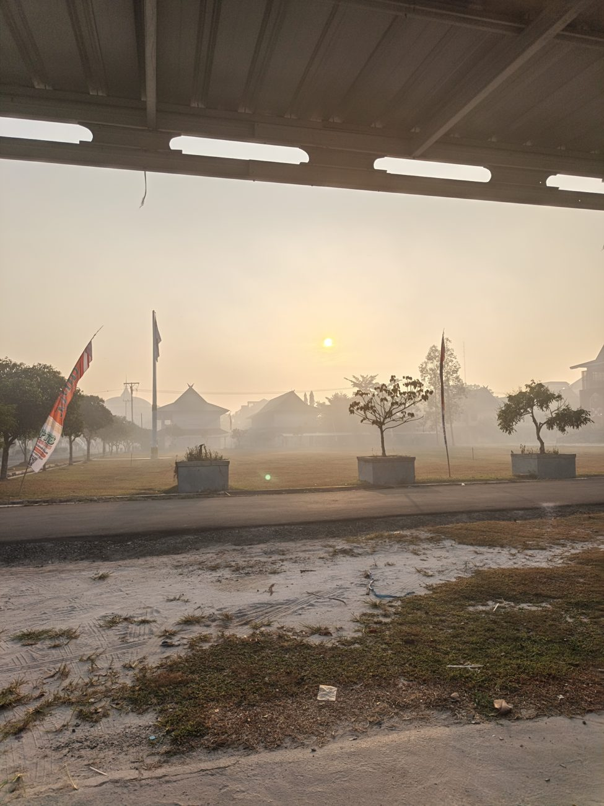
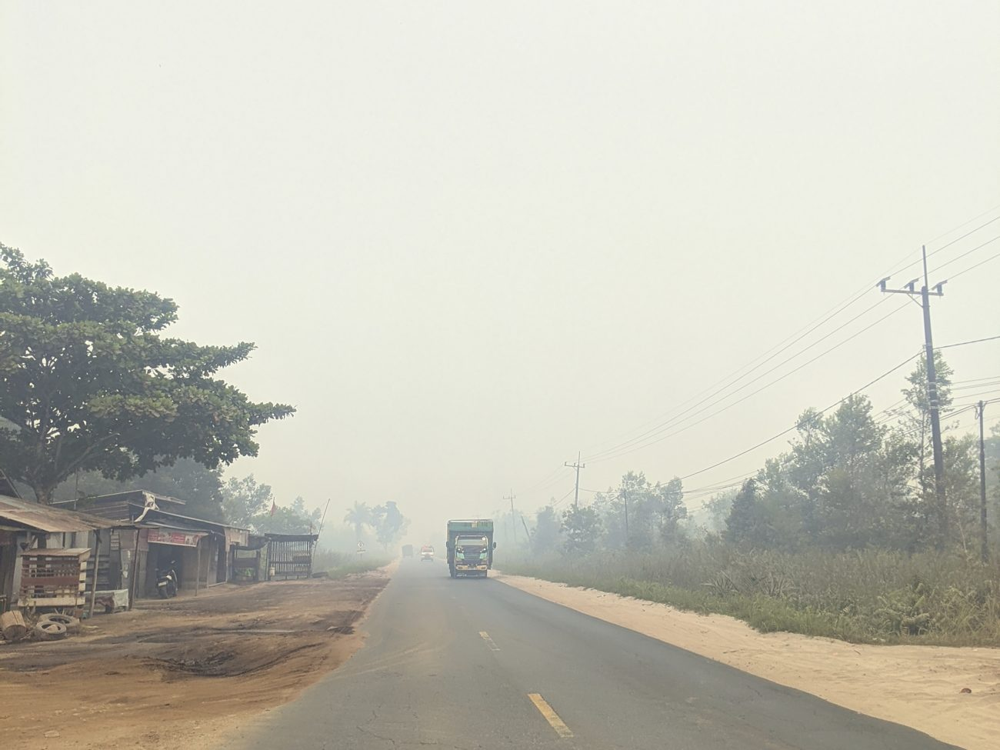

The air it’s going into
This is Palangka Raya this August, in the thick of the burning season. The sun dims to something you can look straight at, and the road out of town simply stops. This is what two purifiers are up against.

